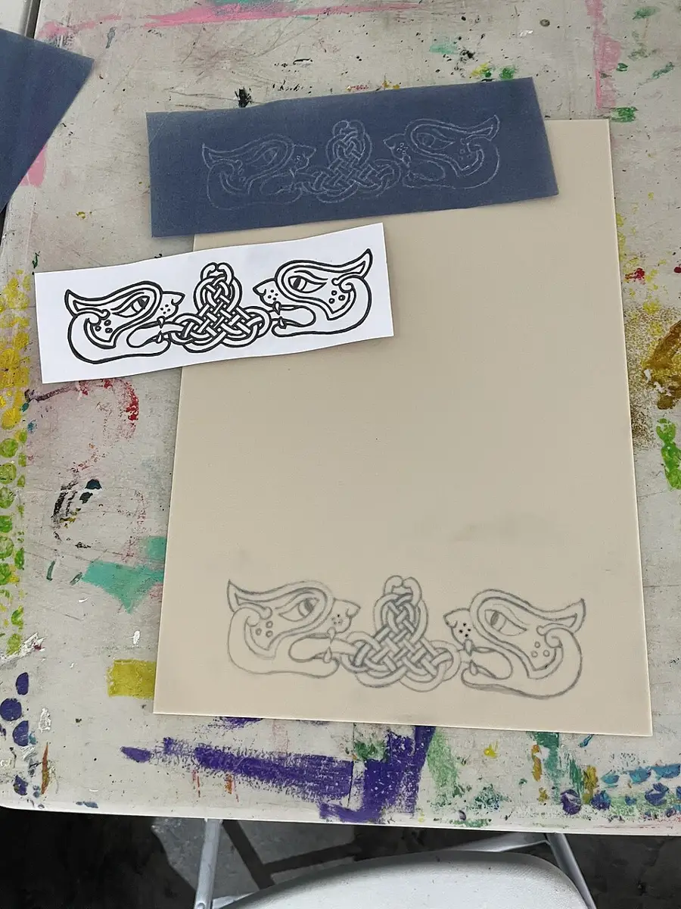

Celtic Knot Drawing Studio
For St. Patrick's Day, teens draw true Celtic knots on a dot grid: one unbroken line woven over and under itself, checked crossing by crossing.
Before you begin
- Ages
- 13–14
- Group
- 4–16 kids
- Time
- 45–60 min
- Where
- Indoors
- Prep
- Some prep needed

Setup
Rule the grids before you invite a single knot, and rule them as the session's first craft act, together: dots counted aloud in the first rows, spacing checked by a partner's eye, because every later frustration in this studio is a grid error wearing a knot's clothing. Teach the tradition's frame at setup with the same care as its geometry: these interlace patterns come from Irish and wider Celtic art many centuries deep, carried in stone, metal and illuminated manuscripts; the studio learns their drawing method from published sources, as St. Patrick's Day guests of the tradition, and its respect is accuracy, real alternation, real counting, no pretend knotwork of squiggles blessed with a shamrock. Set the session's order now and write it on the board: plait first (the simple over-under braid every member completes), the true knot second for those the plait releases, checking third and always, inking last, because a studio that inks first and checks later produces beautiful false knots, and this one's whole pride is that its knots are true. Agree the studio's temperament law before pencils move: unpicking with an eraser is the craft's normal motion, a found error is a credit announced without shame, and speed is not a category anyone in this room is competing in.
Materials
- dot-grid paper ruled true, or plain paper and the patience to rule it (the grid is the knot's skeleton and it is not negotiable: dots evenly spaced, rows counted before a line is drawn, a knot built on a wandering grid wanders in every crossing, and this studio rules its grids the way it checks its weaves, before it needs them)
- pencils, erasers that forgive, and one dark pen per member for the final inking (the studio's order is pencil until proven, pen when true: the weave is drawn, checked crossing by crossing, repaired in pencil, and only then inked, because ink is a knot's signature and a signature is not written over a guess)
- the worked examples, one simple plait and one true knot drawn large by the studio's keeper in advance, with their crossings marked (the examples are teaching instruments, shown entire and then pinned where the room can study them; the studio is honest that it learns this Irish and Scottish tradition from its published geometry, as beginners, with respect)
- the crossing-check cards. The studio's one law printed plainly: at every crossing, the strand that passed OVER must pass UNDER at its next crossing, and the card shows a checked run of crossings ticked in sequence (the alternation is the whole knot: break it anywhere and the weave lies, so the studio checks as it draws, crossing by crossing, never in a hopeful rush at the end)
Steps
- The framing, the two worked examples pinned where the light finds them: 'One line, no beginning it will admit to. Look at the knot on the board: a single strand, travelling its grid, diving under a crossing, rising over the next, under, over, all the way home to where it started. Which it will not point out to you. That alternation is not decoration. It is the knot's entire claim to be a knot, and it can be checked, by you, crossing by crossing, with a finger and the law on the card: over, then under, then over, never twice the same. Break the alternation once and you have drawn a rope lying on itself and called it weaving. Keep it everywhere and the drawing does the thing real knots do: it holds together by its crossings. Today we draw them truly or not at all. A plait first, until the rhythm is in the hand. Then, for those the plait releases, a closed knot on the grid, checked as it grows. Pencil until proven, pen when true, and the errors we find will be announced in this room like honours, because a found error is a knot saved.' The keeper traces the big knot's strand with one finger at teaching pace, calling the crossings aloud, over, under, over, and the room answers the last three before the first grid is touched.
- The plait, every member's first completed weave: on a short grid, the studio draws the simple braid together, strand entering, crossing, crossing, exiting, slowly, the count spoken, each crossing checked by its maker against the card before the next is drawn, because the plait is not a warm-up to be endured but the whole law practised at merciful length. Members whose plait runs true help as checkers at neighbouring grids, the studio's first office, reading crossings aloud for a drawer whose eyes have gone pattern-blind, which happens to every weaver by the third row and is named in the framing so nobody mistakes it for failure. When a plait is finished and checked entire, it is inked entire in the session's small ceremony: its maker inks, its checker witnesses, and the plait goes up on the board of true weaves, where it stays all session, not the best plaits, all of them, in finishing order, because the board is a census of the law kept, not a podium.
- The true knot, drawn on the closed grid by those the plait releases: the keeper demonstrates the construction once, slowly, the grid's dots connected in the method's stated order, walls and breaks placed by the published pattern for a small closed knot, the strand's path pencilled light until its whole journey exists, and then the room's discipline changes key: draw a stretch, check a stretch, the finger travelling every new crossing back to the last certainty, because a closed knot's error hides better the further the strand has travelled from it. Members choose their knot's size by honest appetite: a small knot finished true outweighs a grand one abandoned hopeful, and the studio says so at the choice, in the open. Checkers rotate by the board's order; a checker who finds a break announces it as the framing taught, 'a crossing to look at', never a verdict on its drawer, and the repair is drawn by the strand's own maker, eraser working back to the last true crossing, because a knot repaired by another hand teaches its maker only that someone else can weave.
- The inking and the strand-trace, the studio's proof: a knot is inked only when its maker and its checker have traced its single strand together, finger on the line, from any starting crossing all the way home, calling the alternation entire, over, under, over, without one break, one lift of the finger, or one merciful skip. A knot that fails its trace returns to pencil without ceremony and its trace is re-run after repair; a knot that passes is inked by its maker in one unhurried sitting, the pen following the proven path, and signed on its margin with the date and the checker's initials beside the maker's, because a true knot in this studio always has two names on it: the hand that drew it and the eyes that proved it. Inked knots join the board of true weaves, and the keeper reads the board's census aloud, plaits, knots, repairs counted and honoured as a number, not hidden as a history.
- Closing the studio, the strand traced once more by the whole room: the keeper's own demonstration knot, drawn during the session, at the front, where its errors were as public as anyone's, is traced entire by the room's voices together, crossing by crossing, to its home. The tell-back is said with the board of true weaves full in view: 'This morning a knot was a pretty squiggle none of us could prove. Now this board holds weaves that have been traced strand by strand and found true, over, under, over, all the way home, by their makers and their checkers together. We ruled our grids before we trusted them, we announced our errors like honours, we inked nothing we had not proven, and the tradition we visited for its saint's day was repaid in the only currency it accepts: accuracy. One line, no beginning it will admit to, and not one loose end on this board it has not earned.' Grids, cards and examples are filed together, unfinished knots are kept by their makers or filed at their word for a returning studio, and the board is photographed only with its makers' consent, names and all, or not at all.
Variations
Easier: A plait-only version (a short hour or a very first studio): the braid drawn, checked and inked at three lengths, the law entire at the merciful scale, because a true plait is this craft complete, and the knot will keep for a room that has earned it.
Harder: A panel version (a returning studio): makers join their true knots in a shared border panel for the room's St. Patrick's Day display, each knot traced and signed before it is mounted. The panel is only ever as true as its least-checked knot, and its makers say so on its card.
Safety
This studio's hazards are small, sharp and honest, and they are governed plainly: compasses and ruling pins, where the grids are ruled with them, are tools counted out and back by name, points travelling down, and a member who rules with a ruler and a pencil alone is using the studio's full standard kit. No apology is owed for the safest instrument on the table. Pens and inks are the room's ordinary washable school stock; ink on skin is a laundry matter, never scrubbed with anything but soap and water, and the studio's one chemical law is that no solvent, correction fluid beyond the room's standard stock, or craft knife enters the knot table under any flag of authenticity. Posture and light are the real ergonomics of close work: grids are lit by the best light the room can arrange at setup, the keeper calls a stretch-and-look-away break at the session's middle whether anyone asks or not, because eyes that have gone pattern-blind are a safety matter for the weave and a comfort matter for their owner, and a member whose eyes or hands are done may hold the checker's office for the rest of the studio at full standing, the board's census crediting their proofs by name. The tradition framing is a care law too: jokes at the expense of the culture whose art is being learned end the joker's turn until the keeper is satisfied the room's respect is restored, the studio visits this tradition as a guest, and guests are governed.
Inclusion notes
Weaving on paper divides its honours between the drawing hand and the proving eye, and this studio's highest office belongs to the eye: the checker, tracer of strands, caller of crossings, witness of inkings, works from any seat, with a finger, a pointer, or a voice directing a partner's finger along the line, and a knot's margin carries the checker's initials at the same size as its maker's, because truth in this room is a two-person craft. Drawing adapts at the table: grids can be ruled large for hands and eyes that prefer them, knots can be drawn at double scale with the alternation entire, a maker may dictate a knot's path while a scribe's pencil travels it, the path is still the maker's, checked by the same law, and tracing a strand aloud, calling over and under in sequence, is a full way of weaving for a member whose hands are not drawing today. The board of true weaves takes every finished scale, plait or knot, large or small, in finishing order, the census read without ranking, and unfinished knots are filed at their makers' word as works the next studio can honourably resume. Nobody's session depends on inking: a knot proven in pencil and still being repaired at the close has lived the studio's whole discipline, and the closing reads its maker's name among the weavers entire.
Tried this? Rate it
Your ratings live in this browser only. Nobody else can see them. There are no community ratings here; every star on this card is yours.
Rate this activity, add a note, or write a reflection
Quick reflection
Optional, saved with your rating, and exported with "Copy my week".
Full activity card,